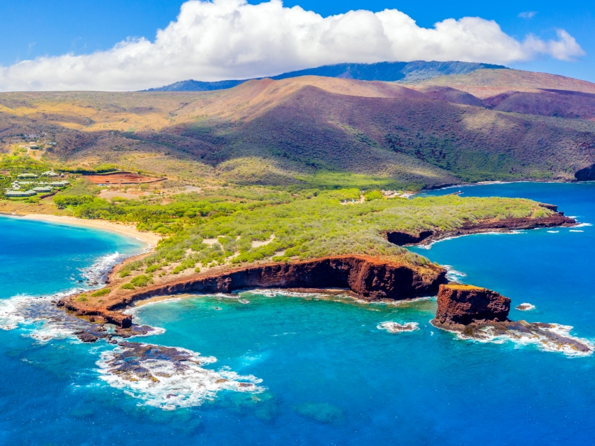

Images
Lanai, often referred to as the "Pineapple Island," is known for its secluded beaches, rugged landscapes, and luxury resorts. It's a quieter destination compared to some of the other Hawaiian islands, making it ideal for relaxation and outdoor activities like hiking, snorkeling, and exploring the island's unique rock formations and gardens.